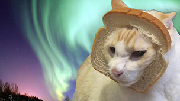

Cat Breading, also known as Breading Cats, is a photo fad that involves taking pictures of cats with slices of bread placed around the neck. The name of the series is meant to be a pun for “inbred.”
The original cat bread photo was posted to both Reddit and Tumblr on August 2nd, 2011, where it received over 51,000 notes in six months. It was reshared on humor blogs Tastefully Offensive and Bits and Pieces the same day. On the 19th of that month, it was posted to the pics subreddit, receiving 8,095 up votes and 6,964 down votes.